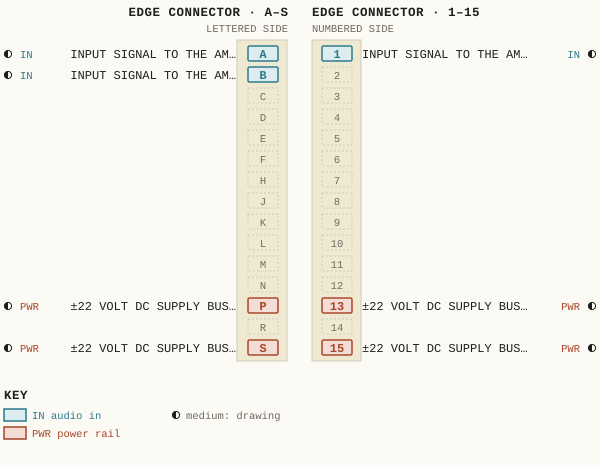
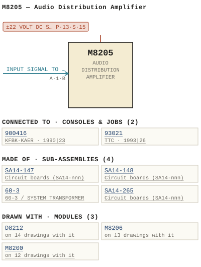

M8205 — Audio Distribution Amplifier
| Type | module |
| Category | AMPLIFIERS |
| Try it | simulator & front panel · download package (zip) |
| Earliest dated evidence | 1995|28 — manual issue date |
| Evidence | "Issue #6 11 May 1995" in WBSps Engineering from H drive-20261018T013433Z-1-002/WBSps Engineering from H drive/WBSps - Word Perfect Manuals/M8205#6.WP |
| Confidence | high |
| All years found | 1995|28, 1997|30 |
| Used in jobs | 900416 (1990|23), 93021 (1993|26) |
| Variants | M8205B, M8205W |
| Folder | Consoles/1990-1999/900416 - KFBK-KAER |
| Folder | Consoles/1990-1999/950272 - TTC |
| Folder | DOCUMENTS/Internal and Eng Notes and drawings/Quotations brochures and misc papers |
Connections
What it is made of and what it is part of.
Pictures


M8205.pinout.svg

M8205.connections.svg 1986 - 8205-03-003 - HEATSINK USED ON 14-147 & 14-148 PCB (M8205 & M8206 DA) - DRN J - ISS 1.png
1986 - 8205-03-003 - HEATSINK USED ON 14-147 & 14-148 PCB (M8205 & M8206 DA) - DRN J - ISS 1.png 1987 - 8205-03-005 - INSULATING WAFER (USED ON PCB 14-147 & 14-148) - DRN GEB - ENG GEB MAY - ISS 1.png
1987 - 8205-03-005 - INSULATING WAFER (USED ON PCB 14-147 & 14-148) - DRN GEB - ENG GEB MAY - ISS 1.png 1989 - DOC - 8200 brochure 1989 a.jpg
1989 - DOC - 8200 brochure 1989 a.jpg 1989 - 8205-03-004 - HANDLE P.C. BOARD PULLER USED ON D8212 FRAME - DRN J - ISS 2.png
1989 - 8205-03-004 - HANDLE P.C. BOARD PULLER USED ON D8212 FRAME - DRN J - ISS 2.png 1990 - 900416 - DOC - 900416-04-001 - SELECTOR PANELS LIMITATION ROWS WITH CHARACTERS PER PUSHBUTTON.jpg
1990 - 900416 - DOC - 900416-04-001 - SELECTOR PANELS LIMITATION ROWS WITH CHARACTERS PER PUSHBUTTON.jpg 1995 - 950272 - DOC - 950272-01-002 - IERN MULT MULT BROADVEW CASTLE FRANK SHERBOURNE YCNGE.jpg
1995 - 950272 - DOC - 950272-01-002 - IERN MULT MULT BROADVEW CASTLE FRANK SHERBOURNE YCNGE.jpg 1995 - M8205 - 2013-03-14 11_20_34.jpg
1995 - M8205 - 2013-03-14 11_20_34.jpg 1995 - M8205 - 2013-03-14 11_20_37.jpg
1995 - M8205 - 2013-03-14 11_20_37.jpg 1995 - M8205 - 2013-03-14 11_20_45.jpg
1995 - M8205 - 2013-03-14 11_20_45.jpg 1995 - M8205 - 2013-03-14 11_20_46.jpg
1995 - M8205 - 2013-03-14 11_20_46.jpg 1995 - M8205 - 2013-03-14 11_20_48.jpg
1995 - M8205 - 2013-03-14 11_20_48.jpg 1995 - M8205 - 2013-03-14 11_20_50.jpg
1995 - M8205 - 2013-03-14 11_20_50.jpg 1995 - M8205 - 2013-03-14 11_20_55.jpg
1995 - M8205 - 2013-03-14 11_20_55.jpg 1995 - M8205 - 2013-03-14 11_21_04.jpg
1995 - M8205 - 2013-03-14 11_21_04.jpg 1995 - M8205 - 2013-03-14 11_21_09.jpg
1995 - M8205 - 2013-03-14 11_21_09.jpg 1995 - M8205 - 2013-03-14 11_21_11.jpg
1995 - M8205 - 2013-03-14 11_21_11.jpg 1995 - M8205 - 2013-03-14 11_21_19.jpg
1995 - M8205 - 2013-03-14 11_21_19.jpg 1995 - M8205 - Distribution Amp 001.jpg
1995 - M8205 - Distribution Amp 001.jpg 1995 - M8205 - Distribution Amp 002.jpg
1995 - M8205 - Distribution Amp 002.jpg 1995 - M8205 - Distribution Amp 003.jpg
1995 - M8205 - Distribution Amp 003.jpg 1995 - M8205 - file.jpg
1995 - M8205 - file.jpg 19xx - DOC - 8200 brochure a.jpg
19xx - DOC - 8200 brochure a.jpg 1990 - 900416-04-001 - KFBK KAER RADIO DISTRIBUTION SYSTEM RACK LAYOUT - DRN WS - ISS 1.jpg
1990 - 900416-04-001 - KFBK KAER RADIO DISTRIBUTION SYSTEM RACK LAYOUT - DRN WS - ISS 1.jpg 1993 - 93021-01-001 - TTC EVALUATION PACKAGE FUNCTIONAL - DRN PA - ENG PA - ISS 1.jpg
1993 - 93021-01-001 - TTC EVALUATION PACKAGE FUNCTIONAL - DRN PA - ENG PA - ISS 1.jpg 19xx - TTC DISPATCH -D- PA SYSTEM SIMULATION FUNCTIONAL - DRN WKW - ENG WKW.jpg
19xx - TTC DISPATCH -D- PA SYSTEM SIMULATION FUNCTIONAL - DRN WKW - ENG WKW.jpg 1986 - D8212 - 003 (2).jpg
1986 - D8212 - 003 (2).jpg 1986 - D8212 - 003.jpg
1986 - D8212 - 003.jpg 1986 - D8212 - 004 (2).jpg
1986 - D8212 - 004 (2).jpg 1986 - D8212 - 004.jpg
1986 - D8212 - 004.jpg 1986 - D8212 - 005 (2).jpg
1986 - D8212 - 005 (2).jpg 1986 - D8212 - 005.jpg
1986 - D8212 - 005.jpg 1986 - D8212 - 006 (2).jpg
1986 - D8212 - 006 (2).jpg 1986 - D8212 - audio distribution system 001.jpg
1986 - D8212 - audio distribution system 001.jpg 1986 - D8212 - audio distribution system 002.jpg
1986 - D8212 - audio distribution system 002.jpg 1993 - M8200 - P004 - 2-1.jpg
1993 - M8200 - P004 - 2-1.jpg 1993 - M8200 - P007 - 4-1.jpg
1993 - M8200 - P007 - 4-1.jpg 1993 - M8200 - P010 - 5-1.jpg
1993 - M8200 - P010 - 5-1.jpgPinout & connections
Each contact as its own documents name it: 7 named (7 medium confidence). An empty slot is a contact no page names. Hover a contact for its source; the table under the drawing lists them.
pinout (SVG) · connections (SVG) · pins (JSON)
Pin evidence — 7 contacts
| Pin | Signal | Kind | Confidence | Read from | Source |
|---|---|---|---|---|---|
| A | INPUT SIGNAL TO THE AMPLIFIER | audio in | medium | prose | 1995 - M8205 - 8205-02-001 - COMPONENT LAYOUT…, p. 1 “CIRCUIT DESCRIPTION M8205 AUDIO DISTRIBUTION AMPLIFIER Input The input signal to the amplifier is applied at connector pins 1 & A, and the …” |
| 1 | INPUT SIGNAL TO THE AMPLIFIER | audio in | medium | prose | 1995 - M8205 - 8205-02-001 - COMPONENT LAYOUT…, p. 1 “CIRCUIT DESCRIPTION M8205 AUDIO DISTRIBUTION AMPLIFIER Input The input signal to the amplifier is applied at connector pins 1 & A, and the …” |
| B | INPUT SIGNAL TO THE AMPLIFIER | audio in | medium | prose | 1995 - M8205 - 8205-02-001 - COMPONENT LAYOUT…, p. 1 “CIRCUIT DESCRIPTION M8205 AUDIO DISTRIBUTION AMPLIFIER Input The input signal to the amplifier is applied at connector pins 1 & A, and the …” |
| P | ±22 VOLT DC SUPPLY BUS VOLTAGES | power rail | medium | prose | 1995 - M8205 - 8205-02-001 - COMPONENT LAYOUT…, p. 1 “Power Supply Decoupling The ±22 volt DC supply bus voltages appearing at the amplifier connector pins 15 & S and 13 & P are isolated from t…” |
| 13 | ±22 VOLT DC SUPPLY BUS VOLTAGES | power rail | medium | prose | 1995 - M8205 - 8205-02-001 - COMPONENT LAYOUT…, p. 1 “Power Supply Decoupling The ±22 volt DC supply bus voltages appearing at the amplifier connector pins 15 & S and 13 & P are isolated from t…” |
| S | ±22 VOLT DC SUPPLY BUS VOLTAGES | power rail | medium | prose | 1995 - M8205 - 8205-02-001 - COMPONENT LAYOUT…, p. 1 “Power Supply Decoupling The ±22 volt DC supply bus voltages appearing at the amplifier connector pins 15 & S and 13 & P are isolated from t…” |
| 15 | ±22 VOLT DC SUPPLY BUS VOLTAGES | power rail | medium | prose | 1995 - M8205 - 8205-02-001 - COMPONENT LAYOUT…, p. 1 “Power Supply Decoupling The ±22 volt DC supply bus voltages appearing at the amplifier connector pins 15 & S and 13 & P are isolated from t…” |
Dates found in the documents
| Year | Kind | Text | File |
|---|---|---|---|
| 1995|28 | manual issue date | Issue #6 11 May 1995 |
1995 - M8205 - 8205-02-001 - COMPONENT LAYOUT.wp |
| 1995|28 | month & year | March 8, 1995 |
1995 - M8205 - file.dsn |
| 1997|30 | month & year | JUNE 14,1997 |
1995 - M8205 - file.dsn |
Documents (1)
| Year | File | |
|---|---|---|
| 1995|28 | 1995 - M8205 - 8205-02-001 - COMPONENT LAYOUT.wp | note |
Photos & scans (35)


Drawings & design files (3)
| Year | File | |
|---|---|---|
| 1995|28 | 1995 - M8205 - XSM8205.dwg | note |
| 1995|28 | 1995 - M8205 - file.dsn | note |
| 1997|30 | 1997 - M8205 - XSM8205B.dwg | note |
Sub-assemblies & parts used (4)
| Item | What | Family | Year | How we know |
|---|---|---|---|---|
| SA14-147 | Circuit boards (SA14-nnn) | 1986|19 | drawing filed with it | |
| SA14-148 | Circuit boards (SA14-nnn) | 1986|19 | drawing filed with it | |
| 60-3 | 60-3 / SYSTEM TRANSFORMER | Input transformers (60-n) | 1967|0 | named in its manual |
| SA14-265 | Circuit boards (SA14-nnn) | named in its manual |
Parts list — board M8205#6 (14 parts)
From M8205#6.WP; also in timelines/data/bom.csv.
| Ref | Part | Value | Manufacturer | Mfr part no. |
|---|---|---|---|---|
| C1 | Capacitor | 220 uF/10 V | Kemet | T390F227M010AS |
| Q1 | Transistor | National | 2N4401 | |
| R1 | Resistor 1/4W 1% | 16K2 | Philips | MR25 F |
| R9 | Potentiometer | 5K | Bourns | 3006P 5K |
| R10 | Resistor | 1/4W 1% | 8K25 | Philips MR25 F |
| R14 | Potentiometer | 5K | Clarostat | 10-065 |
| R15 | Resistor | 1/4W 5% | 30K | Philips CR25 |
| R19 | Potentiometer | 100K | Bourns | 3006P 100K |
| R20 | Resistor | 1/4W 5% | 22K | Philips CR25 |
| R24 | Resistor | 1/4W 5% | 5K6 | Philips CR25 |
| R36 | Potentiometer | 100K | Bourns | 3006P 100K |
| R37 | Resistor | 1/4W 5% | 47K | Philips CR25 |
| U1 | Integrated Circuit | National | LM833N | |
| R14 | Knob (Black) | Elma | 021-2225 (optional) |
Consoles & jobs it is connected to (2)
Their own drawings name this module.
Named in other drawings & documents (27)

Drawings (5)
Each scan with its trace laid over it: the slider runs from the scan to the vector drawing. Click one to see it large and save it as SVG, DXF, KiCad, PDF or PowerPoint.
Iern Mult Mult Broadvew Castle Frank Sherbourne Ycngeviewer
Selector Panels Limitation Rows With Characters Per Pushbuttonviewer
HEATSINK / USED ON 14-147 & 14-148 PCB (M8205 & M8206 DA)viewer
INSULATING WAFER (USED ON PCB 14-147 & 14-148)viewer
HANDLE / P.C. BOARD PULLER / USED ON D8212 FRAMEviewer
Read from the drawing title blocks.
| Drawing | Title | Date | Drawn by | Checked by | Iss. | Source |
|---|---|---|---|---|---|---|
| B 8205-03-003 | HEATSINK / USED ON 14-147 & 14-148 PCB (M8205 & M8206 DA) | 1986|19 | 1 | file | ||
| B 8205-03-005 | INSULATING WAFER (USED ON PCB 14-147 & 14-148) | 1987|20 | GEB (Gerry E. Bell) | 1 | file | |
| B 8205-03-004 | HANDLE / P.C. BOARD PULLER / USED ON D8212 FRAME | 1989|22 | 2 | file | ||
| 900416-04-001 | Selector Panels Limitation Rows With Characters Per Pushbutton | WS | C | file | ||
| 950272-01-002 | Iern Mult Mult Broadvew Castle Frank Sherbourne Ycnge | file |